Biobjective Performance Assessment with the COCO Platform¶
See: ArXiv e-prints, arXiv:160x.xxxxx, 2016.This document details the rationales behind assessing the performance of
numerical black-box optimizers on multi-objective problems within the COCO
platform and in particular on the biobjective test suite bbob-biobj.
The evaluation is based on a hypervolume of all non-dominated solutions in the
archive of candidate solutions and measures the runtime until the
hypervolume value succeeds prescribed target values.
Introduction¶
The performance assessment of (numerical) optimization algorithms with the COCO platform [HAN2016co] is invariably based on the measurement of the runtime [1] until a quality indicator reaches a predefined target value. On each problem instance, several target values are defined and for each target value a runtime is measured (or no runtime value is available if the indicator does not reach the target value) [HAN2016perf]. In the single-objective, noise-free case, the assessed quality indicator is, at each given time step, the function value of the best solution the algorithm has obtained (evaluated or recommended, see [HAN2016ex]) before or at this time step.
In the bi- and multi-objective case, e.g. on the biobjective bbob-biobj
test suite [TUS2016], the assessed quality
indicator at the given time step is a hypervolume indicator computed from
all solutions obtained (evaluated or recommended) before or at this time
step.
| [1] | Time is considered to be number of function evaluations and, consequently, runtime is measured in number of function evaluations. |
Definitions and Terminology¶
In this section, we introduce the definitions of some basic terms and concepts.
- function instance, problem
In the case of the bi-objective performance assessment within COCO, a problem is a 5-tuple of
- a parameterized function 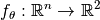, mapping the decision variables of a solution
 to its objective vector
to its objective vector  with 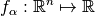 and 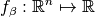 being parameterized (single-objective) functions themselves
with 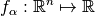 and 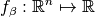 being parameterized (single-objective) functions themselves - its concrete parameter value determining the so-called
function instance
 ,
, - the problem dimension
 ,
, - an underlying quality indicator
 , mapping a set of solutions to its quality, and
, mapping a set of solutions to its quality, and - a target value 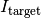 of the underlying quality indicator, see below for details.
We call a problem solved by an optimization algorithm if the algorithm reaches a quality indicator value at least as good as the associated target value. The number of function evaluations needed to surpass the target value for the first time is COCO‘s central performance measure. [HAN2016co] In case a single quality indicator is used for all problems in a benchmark suite, we can drop the quality indicator and refer to a problem as a quadruple 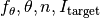. Note that typically more than one problem for a function instance of 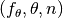 is defined by choosing more than one target value.
- a parameterized function 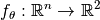, mapping the decision variables of a solution
- Pareto set, Pareto front, and Pareto dominance
- For a function instance, i.e., a function 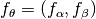 with
given parameter value 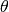 and dimension , the Pareto set is the set
of all (Pareto-optimal) solutions for which no solutions in the search space
exist that have either an improved
 or an improved
or an improved
 value while the other value is at least as good
(or in other words, a Pareto-optimal solution in the Pareto set has no other solution
that dominates it). The image of the Pareto set in the objective space is called
the Pareto front. We generalize the standard Pareto dominance relation to sets by saying
solution set 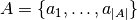 dominates solution set 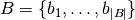
if and only if for all 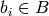 there is at least one solution 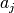
that dominates it.
value while the other value is at least as good
(or in other words, a Pareto-optimal solution in the Pareto set has no other solution
that dominates it). The image of the Pareto set in the objective space is called
the Pareto front. We generalize the standard Pareto dominance relation to sets by saying
solution set 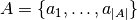 dominates solution set 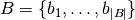
if and only if for all 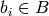 there is at least one solution 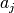
that dominates it. - ideal point
- The ideal point (in objective space) is defined as the vector in objective space that contains the optimal function value for each objective independently, i.e. for the above concrete function instance, the ideal point is given by 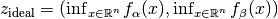.
- nadir point
- The nadir point (in objective space) consists in each objective of the worst value obtained by any Pareto-optimal solution. More precisely, if 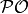 denotes the Pareto set, the nadir point satisfies 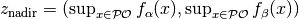.
- archive
- An external archive or simply an archive is the set of non-dominated solutions,
obtained over an algorithm run. At each point
 in time (that is after
function evaluations), we consider the set of all
mutually non-dominating solutions that have been evaluated so far. We
denote the archive after function evaluations as 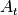
and use it to define the performance of the algorithm in terms of a (quality)
indicator function 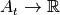 that might depend on a problem’s
underlying parameterized function and its dimension and instance.
in time (that is after
function evaluations), we consider the set of all
mutually non-dominating solutions that have been evaluated so far. We
denote the archive after function evaluations as 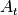
and use it to define the performance of the algorithm in terms of a (quality)
indicator function 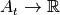 that might depend on a problem’s
underlying parameterized function and its dimension and instance.
Performance Assessment with a Quality Indicator¶
For measuring the runtime on a given problem, we consider a quality indicator
which is to be optimized (minimized).
In the noiseless single-objective case, the quality indicator is the best so-far observed objective function value (recommendations can replace previous observations).
In the case of the bbob-biobj test suite, the quality indicator is based on the
hypervolume indicator of the archive .
Definition of the Quality Indicator¶
The indicator 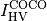 to be mininized is either the negative hypervolume indicator of the archive with the nadir point as reference point or the distance to the region of interest 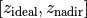 after a normalization of the objective space [2]:
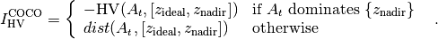
where
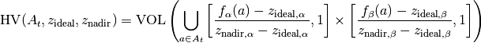
is the (normalized) hypervolume of archive with respect to the nadir point 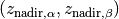 as reference point and where (with division understood to be element-wise, Hadamard division),
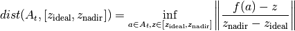
is the smallest (normalized) Euclidean distance between a solution in the archive and the region of interest, see also the figures below for an illustration.

Illustration of Coco’s quality indicator (to be minimized) in the (normalized) bi-objective case if no solution of the archive (blue filled circles) dominates the nadir point (black filled circle), i.e., the shortest distance of an archive member to the region of interest (ROI), delimited by the nadir point. Here, it is the fourth point from the left (indicated by the red arrow) that defines the smallest distance.

Illustration of Coco’s quality indicator (to be minimized) in the bi-objective case if the nadir point (black filled circle) is dominated by at least one solution in the archive (blue filled circles). The indicator is the negative hypervolume of the archive with the nadir point as reference point.
| [2] | We conduct an affine transformation of both objective function values such that the ideal point 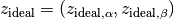 is mapped to 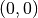 and the nadir point 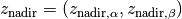 is mapped to 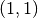. |
Rationales Behind the Performance Measure¶
- Why using an archive?
- We believe using an archive to keep all non-dominated solutions is relevant in practice in bi-objective real-world applications, in particular when function evaluations are expensive. Using an external archive for the performance assessment has the additional advantage that no populuation size needs to be prescribed and algorithms with different or even changing population sizes can be easily compared.
- Why hypervolume?
- Although, in principle, other quality indicators can be used in replacement of the hypervolume, the monotonicity of the hypervolume is a strong theoretical argument for using it in the performance assessment: the hypervolume indicator value of the archive improves if and only if a new non-dominated solution is generated [ZIT2003].
Specificities and Properties¶
In summary, the proposed bbob-biobj performance criterion has the following
specificities:
- Algorithm performance is measured via runtime until the quality of the archive of non-dominated solutions found so far surpasses a target value.
- To compute the quality indicator, the objective space is normalized. The region of interest (ROI) , defined by the ideal and nadir point, is mapped to 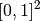.
- If the nadir point is dominated by at least one point in the archive, the quality is computed as the negative hypervolume of the archive using the nadir point as hypervolume reference point.
- If the nadir point is not dominated by the archive, the quality equals the distance of the archive to the ROI.
This implies that:
- the quality indicator value of an archive that contains the nadir point as non-dominated point is 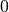.
- the quality indicator value is bounded from below by 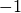, which is the quality of an archive that contains the ideal point, and
- because the quality of an archive is used as performance criterion, no population size has to be prescribed to the algorithm. In particular, steady-state and generational algorithms can be compared directly as well as algorithms with varying population size and algorithms which carry along their external archive themselves.
Definition of Target Values¶
For each problem instance of the benchmark suite, consisting of a parameterized
function, its dimension and its instance parameter  , a set of quality
indicator target values is chosen, eventually used to measure algorithm runtime to
reach each of these targets.
The target values are based on a target precision
, a set of quality
indicator target values is chosen, eventually used to measure algorithm runtime to
reach each of these targets.
The target values are based on a target precision  and a
reference hypervolume indicator value, 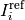, which is an approximation of the
indicator value of the Pareto set.
and a
reference hypervolume indicator value, 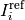, which is an approximation of the
indicator value of the Pareto set.
Target Precision Values¶
All target indicator values are computed in the form of 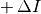 from the instance dependent reference value and a target precision
value .
For the bbob-biobj test suite, 58 target precisions are
chosen, identical for all problem instances, as
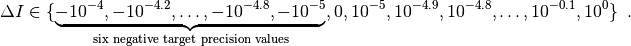
Negative target precisions are used because the reference indicator value, as defined in the next section, can be surpassed by an optimization algorithm. [3] The runtimes to reach these target values are presented as empirical cumulative distribution function, ECDF [HAN2016perf]. Runtimes to reach specific target precisions are presented as well. It is not uncommon however that the quality indicator value of the algorithm never surpasses some of these target values, which leads to missing runtime measurements.
| [3] | In comparison, the reference value in the single-objective case is
the  -value of the known global optimum and, consequently, the target
precision values have been strictly positive [HAN2016perf]. -value of the known global optimum and, consequently, the target
precision values have been strictly positive [HAN2016perf]. |
The Reference Hypervolume Indicator Value¶
Unlike the single-objective bbob test suite [HAN2009fun], the
biobjective bbob-biobj test suite does not provide analytic expressions of
its optima.
Except for 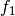, the Pareto set and the Pareto front are unknown.
Instead of the unknown hypervolume of the true Pareto set, we use the hypervolume of an approximation of the Pareto set as reference hypervolume indicator value . [4] To obtain the approximation, several multi-objective optimization algorithms have been run and all non-dominated solutions over all runs have been recorded. [5] The hypervolume indicator value of the obtained set of non-dominated solutions, also called non-dominated reference set, separately obtained for each problem instance in the benchmark suite, is then used as the reference hypervolume indicator value.
| [4] | Using the quality indicator value of the true Pareto set might not be desirable, because the set contains an infinite number of solutions, which is neither a possible nor a desirable goal to aspire in practice. |
| [5] | Amongst others, we run versions of NSGA-II [DEB2002] via Matlab’s
gamultiobj function, SMS-EMOA [BEU2007], MOEA/D [ZHA2007],
RM-MEDA [ZHA2008], and MO-CMA-ES [VOS2010], together with simple
uniform RANDOMSEARCH and the single-objective CMA-ES [HAN2001] on scalarized problems
(i.e. weighted sum) to create first approximations of the bi-objective
problems’ Pareto sets. |
Instances and Generalization Experiment¶
The standard procedure for an experiment on a benchmark suite, like the
bbob-biobj suite, prescribes to run the algorithm of choice once on each
problem of the suite [HAN2016ex].
For the bbob-biobj suite, the postprocessing part of COCO displays currently by
default only 5 out of the 10 instances from each function-dimension pair.
Data Storage and Future Recalculations of Indicator Values¶
Having a good approximation of the Pareto set/Pareto front is crucial in assessing algorithm performance with the above suggested performance criterion. In order to allow the reference sets to approximate the Pareto set/Pareto front better and better over time, the COCO platform records every non-dominated solution over the algorithm run. Algorithm data sets, submitted through the COCO platform’s web page, can therefore be used to improve the quality of the reference set by adding all solutions to the reference set which are currently non-dominated to it.
Recording every new non-dominated solution within every algorithm run also allows to recover the algorithm runs after the experiment and to recalculate the corresponding hypervolume difference values if the reference set changes in the future. In order to be able to distinguish between different collections of reference sets that might have been used during the actual benchmarking experiment and the production of the graphical output, COCO writes the absolute hypervolume reference values together with the performance data during the benchmarking experiment and displays a version number in the plots generated that allows to retrieve the used reference values from the Github repository of COCO.
Acknowledgements
This work was supported by the grant ANR-12-MONU-0009 (NumBBO) of the French National Research Agency.
The authors would like to thank Thanh-Do Tran for his contributions and assistance with the preliminary code of the bi-objective setting and for providing us with his extensive experimental data. We also thank Tobias Glasmachers, Oswin Krause, and Ilya Loshchilov for their bug reports, feature requests, code testing, and many valuable discussions. Special thanks go to Olaf Mersmann for the inital rewriting of the COCO platform without which the bi-objective extension of COCO would not have happened.
References
| [BEU2007] | N. Beume, B. Naujoks, and M. Emmerich (2007). SMS-EMOA: Multiobjective selection based on dominated hypervolume. European Journal of Operational Research, 181(3), pp. 1653-1669. |
| [DEB2002] | K. Deb, A. Pratap, S. Agarwal, and T. A. M. T. Meyarivan (2002). A fast and elitist multiobjective genetic algorithm: NSGA-II. IEEE Transactions on Evolutionary Computation, 6(2), pp. 182-197. |
| [HAN2001] | N. Hansen and A. Ostermeier (2001). Completely derandomized self-adaptation in evolution strategies. Evolutionary computation, 9(2), pp. 159-195. |
| [HAN2016perf] | (1, 2, 3) N. Hansen, A. Auger, D. Brockhoff, D. Tušar, T. Tušar (2016). COCO: Performance Assessment, ArXiv e-prints, arXiv:160x.xxxxx. |
| [HAN2016co] | (1, 2) N. Hansen, A. Auger, O. Mersmann, T. Tušar, D. Brockhoff (2016). COCO: A Platform for Comparing Continuous Optimizers in a Black-Box Setting, ArXiv e-prints, arXiv:1603.08785. |
| [HAN2009fun] | N. Hansen, S. Finck, R. Ros, and A. Auger (2009). Real-parameter black-box optimization benchmarking 2009: Noiseless functions definitions. Technical Report RR-6829, Inria, updated February 2010. |
| [HAN2016ex] | (1, 2) N. Hansen, T. Tušar, A. Auger, D. Brockhoff, O. Mersmann (2016). COCO: The Experimental Procedure, ArXiv e-prints, arXiv:1603.08776. |
| [TUS2016] | T. Tušar, D. Brockhoff, N. Hansen, A. Auger (2016). COCO: The Bi-objective Black Box Optimization Benchmarking (bbob-biobj) Test Suite, ArXiv e-prints, arXiv:1604.00359. |
| [VOS2010] | T. Voß, N. Hansen, and C. Igel (2010). Improved step size adaptation for the MO-CMA-ES. In Genetic and Evolutionary Computation Conference (GECCO 2010), pp. 487-494. ACM. |
| [ZHA2007] | Q. Zhang, and H. Li (2007). MOEA/D: A multiobjective evolutionary algorithm based on decomposition. IEEE Transactions on Evolutionary Computation, 11(6), pp. 712-731. |
| [ZHA2008] | Q. Zhang, A. Zhou, and Y. Jin (2008). RM-MEDA: A regularity model-based multiobjective estimation of distribution algorithm. IEEE Transactions on Evolutionary Computation, 12(1), pp. 41-63. |
| [ZIT2003] | E. Zitzler, L. Thiele, M. Laumanns, C. M. Fonseca, and V. Grunert da Fonseca (2003). Performance Assessment of Multiobjective Optimizers: An Analysis and Review. IEEE Transactions on Evolutionary Computation, 7(2), pp. 117-132. |